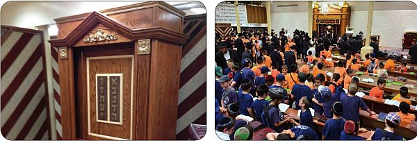

“ויהי רצון שלא יצטרכו לדבר ולספר אחד לשני אודות הנסים, כיון שכל אחד ואחד יראה ור
“ויהי רצון שלא יצטרכו לדבר ולספר אחד לשני אודות הנסים, כיון שכל אחד ואחד יראה ורואה זאת בגלוי, מראה באצבעו ואומר זה, ומכיר ומודה לה’ על הנסים, עד שהוא לא מתבייש לצאת בריקוד בגלל הנסים הגלויים!”… • אנ”ש והתמימים בבית חיינו יצאו בריקודים לאור הניסים הגלויים
“ויהי רצון שלא יצטרכו לדבר ולספר אחד לשני אודות הנסים, כיון שכל אחד ואחד יראה ורואה זאת בגלוי, מראה באצבעו ואומר זה, ומכיר ומודה לה’ על הנסים, עד שהוא לא מתבייש לצאת בריקוד בגלל הנסים הגלויים!”… • אנ”ש והתמימים בבית חיינו יצאו בריקודים לאור הניסים הגלויים

שורות אלו, נכתבות בשעת לילה מאוחרת של יום ראשון. לפני דקות ספורות, 770 כולו בער כאש להבה. כוסיות מפוזרות, שלוליות זיעה על הרצפה הכתומה - חומה, ר’ יוסי כהן על הקלידים, הקירות מסתובבים, הידיים מונפות, הרגליים מקפצות, הלב פועם במהירות והגרון זועק בקול ניחר:
להודות ולהלל, להודות ולהלל, לשמך הגדול. על ניסך ועל נפלאותיך ועל ישועותיך . . יחי אדוננו מורנו ורבינו מלך המשיח לעולם ועד!!!
השמועות על הנסים האדירים שקורים בימים אלו בארץ הקודש, הגיעו לבית חיינו. הם גרמו לרב יקותיאל ראפ להכריז על ריקודים. התמימים לא היו זקוקים לתזמורת, הלבבות בערו מאליהם.
למעלה משמונה מאות טילים (נכון לכתיבת השורות..) נחתו בארץ הקודש - ואיש לא נהרג!!!
מול העיניים עומדות וזועקות דבריו הק’ של מלך המשיח, הרבי שליט”א: “צריכים רק לפתוח את העינים ולהביט אל המאורעות האחרונים . . רואים בגלוי ממש שהתרחשו ומתרחשים נסים ונפלאות לטובת בני ישראל”.
מוסיף הרבי שליט”א ואומר: “ויהי רצון שלא יצטרכו לדבר ולספר אחד לשני אודות הנסים, כיון שכל אחד ואחד יראה ורואה זאת בגלוי, מראה באצבעו ואומר זה, ומכיר ומודה לה’ על הנסים,
עד שהוא לא מתבייש לצאת בריקוד בגלל הנסים הגלויים!”…
אחים אהובים בארץ ישראל,
כשם שדבריו הנבואיים של הרבי שליט”א, ש”ארץ ישראל הוא המקום הבטוח ביותר בעולם” - מתקיימים מול עינינו שוב, בנוסף להתקיימותם בשנות הנפלאות - כך, והרבה יותר מכך,
מתחזקת בלב כל אחד האמונה והביטחון ב”נבואה העיקרית - הנבואה ש”לאלתר לגאולה” ותיכף ומיד ממש “הנה זה (משיח) בא””!!…
בקרוב, קרוב ממש, אפשר כבר למשש זאת, אבינו האהוב - הרבי מלך המשיח שליט”א מתגלה, אז נתאחד כולנו בארץ ישראל השלימה, שונאינו יעבדונו, וכיתתו טיליהם למזמרות, ואת ‘כיפת הברזל’ תחליף חיש כיפה ענקית עם ההכרזה הנצחית:
יחי אדוננו מורנו ורבינו מלך המשיח לעולם ועד
בום, נס. בום, נס.
רבי, תודה!
מענדי, 770 ‘בית משיח’.
יום ראשון, ח’ תמוז
שבוע הנפלאות, נפתח בבית חיינו בסדרי הלימודים התוססים. התמימים שוקדים על לימודם, ומחזקים את הביטחון של יושבי ארץ הקודש.
לאחר מנחה וההוספה בצדקה, מתקיימת חגיגת ברית מילה לאחד בחיילי צבאות ה’ בשכונת קראון הייטס. התמימים ואנ”ש נאספים במזרח בית חיינו, ומאחלים לאבי הבן שיגדלו לתורה חופה ולמעשים טובים.
בסיום הברית, מתקיימת במקום סעודת מצווה. הניגונים מלווים את קולות הלימוד של התמימים. ב–770, ניתן לשמוע בכל שעות היממה הן קולות לימוד והן קולות התוועדות.
יום שני, ט’ תמוז
עם בוקר, מתקיים סדר מיוחד, בו משכימים התמימים זמן נוסף קודם סדר חסידות בוקר ושוקדים על לימוד קטעים מגאולה ומשיח, משיחותיו של הרבי שליט”א.
בימים אלו, ימי הקיץ החמים בעיצומם. אומנם מספרם של תושבי השכונה מעט, רבים נסעו להרים, אך מספר המבקרים בבית חיינו גדל. התמימים המסורים, מקבלים את פני הבאים ועורכים להם סיור מודרך ומסודר בבית חיינו.
לאחר שחרית, מתקיימת מיני התוועדות, לרגל ‘צאתכם לשלום’ של מספר תמימים הנוסעים היום בשליחות המלך לאה”ק. אין איחול יותר טוב מאשר: שתחזרו בקרוב.
שמועות ראשוניות, על המצב באה”ק, מטפטפים לבית חיינו. לאחר שירת ה’יחי’ שבסיום תפילת מנחה, פורצת ספונטנית שירת ‘על ניסך..’. השירה הזו תהדהד כאן בימים הקרובים עוד פעמים רבות.
בסיום הסדרים מתקיים סדר מיוחד ללימוד שיחותיו הק’ של הרבי שליט”א, התמימים שוקדים ומעיינים היטב ביודעם שבזה הוא ההתקשרות.
אסיפה מיוחדת, נערכת היום לתלמידי התמימים, בקשר עם העזרה והסיוע ממרחקים לחינוך ילדי ישראל, בקעמפ הגדול בעולם ‘קעמפ אורו של משיח’.
ההתוועדות הקבועה בפינה הצפונית מזרחית, מתקיימת הערב מתוך שמחת הגאולה והתעוררות לענייניו הק’ של הרבי שליט”א בפרט בקשר לגאולה הקרובה.
יום שלישי, י’ תמוז
בעקבות המצב החמור בארץ הקודש, אשר עשרות טילים נוחתים בכל רחבי הארץ, משכימים התמימים זמן נוסף קודם סדר חסידות, לקיים הנאמר “השכם והערב עליהם והם כלים מאליהם”.
אם למישהו היה ספק, מה כוחה של פעולת התמימים בבית חיינו. הרי שהיום בסיום ה’סדר השכם’ נודע שבדיוק בשעה זו, צה”ל חיסל את אחד מבחירי החמאס.
במשך היום, מוסיפים התמימים בלימוד ובאמירת תהילים. ההרגשה ברורה - כאן בבית חיינו, נקבעת המלחמה. כאן בבית משיח, נקבע הניצחון. תמים ששוקד על לימודו, מסייע יותר מהחייל בקרב - כדברי כ”ק אדמו”ר שליט”א.
עשרות המניינים המתפללים ברחבת הכניסה (מתחת לעזרת נשים) בבית חיינו - 770, זוכים הערב בארון קודש חדש, תרומת השליח הרב זלמן ליברוב מפלטבוש.
יום רביעי, י”א תמוז
בהמשך להצלחה אתמול, משכימים התמימים גם היום לסדר “השכם והערב עליהם, והם כלים מאליהם”. הסדר נערך כבר בפעם השלישית השבוע, בארגונו ובהשקעתו של הת’ מוישי פיזם שמשקיע את כל מירצו בעניין זה.
שוב הסדר השכם מוכיח את עצמו, באותם הרגעים בהם יושבים התמימים בבית חיינו - נתפס בכביש בארץ ישראל, רכב תופת ובו מחבלים שבכוונתם להרוג יהודים רח”ל. מעבר לים, הפרו התמימים את כוונתם הרעה.
גוט יום טוב! חג של גאולה, חג בו האלוקות נצחה את חושך הגלות. החג בו מתרחשת ההתגלות!
עם שקיעת השמש, יורד לעולם ‘חג הגאולה י”ב תמוז’. בבית חיינו האווירה משתנית. שירת ‘יחי’ במנגינת ‘ושמחת..’ פורצת קודם תפילת מעריב והשמחה עולה וגוברת..
החזן של מעריב, מצטרף גם הוא לשמחה העצומה, והתפילה מתנגנת במנגינת הימים הטובים.
לאחר מעריב, מוקרן בבית חיינו וידיאו מראות קודש מהתוועדות י”ב תמוז תשד”מ. במשך שעות ארוכות, צופים עשרות מאנ”ש והתמימים, בציפיה וביטחון שנזכה בקרוב להתוועד עם הרבי שליט”א, בעיני בשר, באוזני בשר.
יום חמישי, י”ב תמוז
יום הולדת וחג גאולת כ”ק אדמו”ר מוהרייצ נ”ע
י”ב תמוז הוא אחד הימים הנעלים בחסידות חב”ד. הוא מהווה חלק ניכר בעבודה, אותה התחיל כ”ק אדמו”ר מוהריי”צ נ”ע וסיים כ”ק אדמו”ר מלך המשיח שליט”א - העבודה להכין את העולם לגאולה האמיתית והשלימה.
בסדר היום, בפרט בחסידות, שוקדים התמימים בתורת בעל השמחה והגאולה. רובם עוברים שוב על ‘רשימת המאסר’, הנותנת מבט אחר לכל היום הקדוש הזה.
לאחר סדר חסידות בוקר, מתאספים התמימים ללימוד ברבים של המאמר “עשרה שיושבים, תרפ”ח”.
גם תפילת שחרית נאמרת בנעימה מיוחדת ובליווי ניגונים. לקריאת התורה מוציאים את הספר תורה לקבלת פני משיח צדקנו.
השמועות על הנסים בארץ הקודש, עוברות מפה לאוזן. הכל שחים בהם, בפרט התמימים שיודעים שזה נעשה ע”י פעולותיהם ולימודם. השמחה גוברת ופורצת בשירת ‘על ניסך..’ לאחר התפילה.
לרגל חג הגאולה י”ב–י”ג תמוז, הגיעו ילדי מחנות הקיץ - ‘גן מנחם’ ו’מחנה ממש’ - בשכונת קראון הייטס, לתפילת מנחה במניין כ”ק אדמו”ר מה”מ שליט”א, בבית חיינו - 770. הילדים התפללו ושרו בהתלהבות רבה וסחפו את שאר המתפללים לתפילה שמחה כראוי לחג הגאולה.
בסיום התפילה הדהדה למרחקים הכרזת וזעקתם של עשרות הילדים יחדיו: יחי אדוננו . . מלך המשיח לעולם ועד!
לקראת מעריב מסודרת ההתוועדות המרכזית של י”ב תמוז בבית חיינו. דקות ספורות לפני מעריב, מוקרן וידאו קצר, מראות קודש, לאחר מכן פורצת שוב השירה האדירה של ‘יחי’ במנגינת ‘ושמחת..’.
ההתוועדות המרכזית נפתחת בחזרת דא”ח, מאמר “עשרה שיושבים”, אותו חוזר הרב נחמן שפירא משפיע באוהלי תורה. לאחר מכן מנגן הקהל את ‘פדה בשלום’.
הרבנים חברי הבד”צ הרב אהרן יעקב שווי והרב יוסף ישעי’ ברוין - נושאים דברים אף הם.
לאחר מכן מתקיימת התוועדות מרכזית, במשך שעות ארוכות עם החסיד הישיש ר’ מענדל מרוזוב מזקני אנ”ש, אשר סיפר מזיכרונותיו מתקופות נשיאות כ”ק אדמו”ר מוהריי”צ נ”ע וכ”ק אדמו”ר שליט”א.
ליל שישי, י”ב - י”ג תמוז, בית חיינו מלא בהתוועדויות. בכל פינה ניתן לראות מספר חסידים יושבים, מעוררים איש את רעהו להתקשרות, מנגנים ניגון חסידי ומרימים כוסית ‘לחיים’.
עד אור הבוקר..
יום שישי, י”ג תמוז
חג הגאולה דכ”ק אדמו”ר מוהרייצ נ”ע
ההתוועדויות הסוערות מתחברות בהגיע סדר חסידות, לשיעור ב’דבר מלכות’ המיוחד של השבוע - ש”פ פינחס. כל רגע ביום, כל מחשבה או דיבור, הם חלק מהחיים הגאולתיים והיום הגאולתי.
לאחר שחרית, מכניס ר’ יוסי כהן את בנו בבריתו של אברהם אבינו. חגיגת הברית מתחברת לרצף התוועדויות חג הגאולה..
התמימים יוצאים להפוך את ניו יורק רבתי לקבלת פני משיח. בכל חנות, נפתחת חיש התוועדות חסידית לרגל חג הגאולה.
גוט שבת! גוט יום טוב!
החזן ניגש לתפילת קבלת שבת. השמחה גוברת עשרות מונים כשמנגינת ‘לכה דודי’, על כל עוצמתה, מתחלפת לניגון המושר עשרים שנה ברציפות בעידודו הבלתי פוסק של הרבי מלך המשיח שליט”א: יחי אדוננו מורנו ורבינו מלך המשיח לעולם ועד!
בסיום התפילה, נערך שיעור גאולה ומשיח מרתק מפי הת’ יהודל’ה לוינסון. שיעור המסכם את תהליך בשורת הגאולה של הרבי שליט”א.
לאחר מכן, מתיישבים מאות התמימים לסעודת שבת משותפת והתוועדות חסידית לרגל חג הגאולה - בזאל של 770. זאת ע”פ דבריו של הרבי שליט”א להמשיך את חגיגות י”ב–י”ג תמוז גם בשבת שאחריהם.
האווירה המרוממת, הסעודה כיד המלך והמשקה בשפע - בארגונם של התמימים יהודה גרונברג ודיוויד ג’מיל, מעניקים את כל האפשרויות להתוועדויות שמחות ופעילות. בהמשך מצטרף גם ר’ אברמק’ה קוזלינר.
עד אור הבוקר, ממשיכים התמימים לשבת ב’שבת אחים גם יחד’, ולעורר זה את זה להתקשרות חדשה, חזקה ואיתנה למלך המשיח.
שבת קודש, פ’ פנחס, י”ד תמוז
בסדר חסידות בוקר, מתקיים שיעור מיוחד ללימוד הדבר מלכות השבועי.
בשעה 1:30 מתחילה התוועדות הק’ של הרבי מלך המשיח שליט”א. התמימים ניצבים הכן מול מקומו הק’, שרים מכל הלב ‘יחי אדוננו’, מרימים כוסית ‘לחיים’ ודורשים לחזות בפני המלך בהתגלותו.
לאחר מנחה, אמירת פרק ו’ בפרקי אבות יחד עם הרבי שליט”א, סדר ניגונים וחזרת דא”ח.
לאחר מעריב והבדלה מוקרן הוידיאו השבועי, הפותח בעידודי הרבי שליט”א את שירת ‘יחי אדוננו’ לפני עשרים שנה.